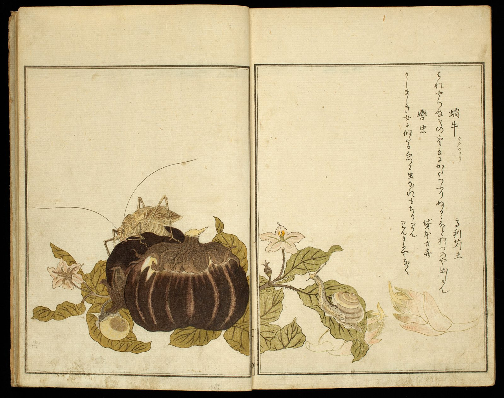

References / Book / 565
Utamaro, Picture Book of Selected Insects (Ehon mushi erabi)
A two-volume color-printed book in which Kitagawa Utamaro’s insects and plants face comic poems on the opposite page, inside thin printed frames.
- Source
- Art Institute of Chicago, 2022.633
- Creator
- Kitagawa Utamaro
- Made
- 1788
- Style
- Ukiyo-e (agent-proposed, not yet reviewed by a person)
- Moods
- Delicate, calm, witty
- Evidence
- Downloaded and inspected the Art Institute of Chicago image of 2022.633 (1686 × 1331 px). The image shows one open spread; other spreads were not inspected.
- Reviewed
- Rights
- Open license, stored. License: CC0-1.0. Rights policy
Context
AIC catalogues the work as color woodblock printed books, two volumes, 27 × 18.3 cm, 1788. AIC 2022.633.
Wikipedia’s Ukiyo-e article names illustrated books among the formats of ukiyo-e production. Wikipedia.
Observed
- The open spread has two pages, each with a thin double-ruled frame printed in black.
- On the left page a katydid sits on a large dark purple eggplant among olive-green leaves and pale pink flowers. The plant sits on the lower edge of the frame and leaves the upper half empty.
- The plant continues across the gutter to the right page, where a snail climbs a stem.
- On the right page, poems in cursive script run in vertical columns from the upper right.
- Colors are flat and muted: dark purple, olive green, pale pink, and buff. Fine black lines draw the veins, the legs, and the antennae.
- The paper is cream with a visible laid texture.
Why it belongs
The book shows how the style handles text and image together: one frame for both, text in a column, picture in the lower half.
The picture that crosses the gutter treats the spread as one composition.
Borrow
Put the image low in a ruled frame and run the text in a column above or beside it.
Let one element cross the boundary between two panels to join them.
Measured
Machine-extracted by tools/image-traits.py on . Full measurement.
- Mean chroma
- 0.2
- Palette
- #e7d8b2 53%
- #d8c8a0 14%
- #020202 7%
- #a48e5f 3%
- #cdb98c 3%
- #b4a06e 3%
- #f1e2be 3%
- #8a7247 3%



is_public_domain: true) and releases images of public-domain works under CC0. AIC open access. Utamaro died in 1806, and the book was published in 1788, so the work is public domain in Japan and the United States. License: CC0-1.0. Open the image for full size.